Chapter 4 第四章作业
4.1 4.1 MA(1)的ACF
MA(1)模型为： \[ x_{t}=w_t +\theta w_{t-1} \]
根据自相关函数的定义，可知MA(1)的自相关函数为： \[\begin{align} \rho_{x}(1)=\frac{\gamma(1)}{\gamma(0)}&=\frac{cov(x_t,x_{t+1})}{cov(x_t,x_t)}\notag\\ &=\frac{\theta}{1+\theta^2}\notag \end{align}\]
对MA(1)的ACF进行求导，可得： \[\begin{align} \rho_{x}^{'}(1)=\frac{1+\theta-2\theta^2}{(1+\theta^2)^2}\notag \end{align}\]
令ACF等于0，可以解得： \[ \theta_{1}=-\frac{1}{2}, \theta_{2}=1 \] 故可知，当\(\theta=1\)时，ACF有最大值： \[ max \rho_{x}^{}(1)=\frac{1}{2} \] 当\(\theta=-\frac{1}{2}\)时，ACF有最小值： \[ min \rho_{x}^{}(1)=-\frac{2}{5} \]
因此，也证明了下式： \[ |\rho_{x}(1)|\le1/2 \]
实际上，也可以利用R来简单的观察到函数的大致性质：
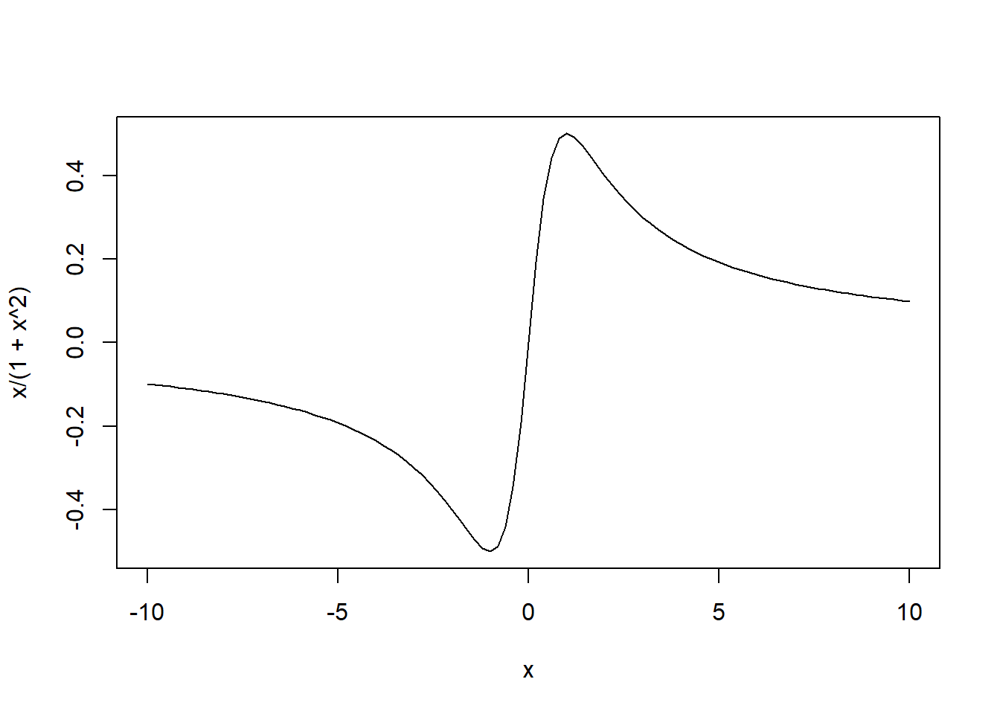 \(\square\)
4.2 4.2 白噪声过程
4.2.1 (a)
使用数学归纳法来证明命题，在\(t=1\)时： \[\begin{align} x_{1}&=\phi x_{0}+w_{1}\notag\\ &=\phi w_{0}+w_{1}\notag\\ &=\sum_{j=0}^{t}\phi^{j}w_{1-j}\notag \end{align}\]
命题成立。现假设\(t-1\)时命题为真，即为： \[ x_{t-1} =\sum_{j=0}^{t-1}\phi^{j}w_{t-1-j} \]
那么在等于\(t\)时： \[\begin{align} x_{t}&=\phi x_{t-1}+w_{t}\notag\\ &=\phi \sum_{j=0}^{t-1}\phi^{j}w_{t-1-j}+w_{t}\notag\\ &=\sum_{j=0}^{t}\phi^{j}w_{t-j}\notag \end{align}\]
由归纳法得知，命题得证。 \(\square\)
4.2.2 (b)
求期望\(E[x_{t}]\): \[\begin{align} E[x_{t}] &=E[\sum_{j=0}^{t}\phi^{j}w_{t-j}]\notag\\ &=\sum_{j=0}^{t}\phi^{j} E[w_{t-j}]\notag\\ &=0 \notag \end{align}\] \(\square\)
4.2.3 (c)
根据方差的性质： \[ Var(ax)=a^{2}Var(x) \]
以及公式： \[ \sum_{j=0}^{k}a_{j}=(1-a^{k+1})/(1-a) \]
故可知\(Var(x_{t})\)为： \[\begin{align} Var[x_{t}] &=Var[\sum_{j=0}^{t}\phi^{j}w_{t-j}]\notag\\ &=\sum_{j=0}^{t}\phi^{2j} Var[w_{t-j}]\notag\\ &=\sigma_{w}^{2}\sum_{j=0}^{t}\phi^{2j} \notag\\ &=\frac{\sigma_{w}^{2}}{1-\phi_{2}}(1-\phi^{2(t+1)})\notag \end{align}\] \(\square\)
4.2.4 (d)
利用前几问的结果，可以将 \(x_{t+h}\)表示为： \[ x_{t+h}=\phi^{h}x_{t}+\sum_{j=0}^{h-1}\phi^{j}w_{t+h-j} \]
利用上式，可以计算\(cov(x_{t+h},x_{t})\): \[\begin{align} cov(x_{t+h,x},x_{t})&=cov(\phi^{h}x_{t}+\sum_{j=0}^{h-1}\phi^{j}w_{t+h-j},x_{t})\notag\\ &=\phi^{h}cov(x_{t},x_{t})+cov(\sum_{j=0}^{h-1}\phi^{j}w_{t+h-j},x_{t})\notag\\ &=\phi^{h}Var(x_{t})\notag \end{align}\] \(\square\)
4.2.6 (f)
当\(t\to \infty\)时，可以发现： \[ Var(x_{t})=\frac{\sigma_{w}^{2}}{1-\phi_{2}}(1-\phi^{2(t+1)})\to\frac{\sigma_{w}^{2}}{1-\phi_{2}} (|\phi|<1) \] 即\(t\to \infty\)时，方差与\(t\)的关系逐渐消失，因此\(x_{t}\)是渐进平稳的。
4.2.8 (h)
根据题意，可以将\(x_{t}\)表示为: \[ x_{t}=\phi^{t}x_{0}+\sum_{j=0}^{t-1}\phi^{j} w_{t-j} \]
则可知\(Var(x_{t})\)为： \[\begin{align} Var[x_{t}] &= Var[\sum_{j=0}^{t-1}\phi^{j}w_{t-j}] + Var[\phi^{t}x_{0}]\notag\\ &=\sum_{j=0}^{t-1}\phi^{2j} Var[w_{t-j}] + Var[\phi^{t}\frac{w_{0}}{\sqrt{1-\phi^2}}]\notag\\ &=\sigma_{w}^{2}\sum_{j=0}^{t-1}\phi^{2j}-\frac{\phi^{2t}}{1-\phi^{2}}Var[w_{0}] \notag\\ &=\frac{\sigma_{w}^{2}}{1-\phi_{2}}(1-\phi^{2t})-\frac{\sigma_{w}^{2}}{1-\phi_{2}}\phi^{2t}\notag\\ &=\frac{\sigma_{w}^{2}}{1-\phi_{2}}\notag \end{align}\]
即方差与时间\(t\)无关。同时易知\(x_{t}\)的期望仍然为0。因此可以得知，这个过程是平稳的。 \(\square\)
4.3 4.3 参数冗余的讨论
4.3.1 (a)
模型1可以表示为： \[ (1-0.3B)(1-0.5B)x_{t}=(1-0.3B)w_{t} \] 等式两边可以约分，因此模型1存在参数冗余。化简后的模型为： \[ x_{t}=0.5x_{t-1}+w_{t} \] 这是一个AR模型。
模型2可以表示为： \[ (1-B+0.5B^{2})x_{t}=(1-B)w_{t} \] 等式两边无法约分，因此模型2不存在参数冗余。
4.3.2 (b)
模型(i) AR(1)模型
\(\phi\)的根大于1，因此模型(i)为因果模型。
模型(ii) ARMA(2,1)模型
\(\phi\)的根大于1，因此模型(ii)为因果模型。\(\theta\)的根等于1，因此模型(ii)不是可逆模型。
## [1] 2## [1] 1.414214 1.414214## [1] 14.3.3 (c)
- 模型(i)的因果系数和可逆系数
## [1] 0.500 0.250 0.125 0.062 0.031 0.016 0.008 0.004 0.002 0.001 0.000 0.000
## [13] 0.000 0.000 0.000 0.000 0.000 0.000 0.000 0.000 0.000 0.000 0.000 0.000
## [25] 0.000 0.000 0.000 0.000 0.000 0.000 0.000 0.000 0.000 0.000 0.000 0.000
## [37] 0.000 0.000 0.000 0.000 0.000 0.000 0.000 0.000 0.000 0.000 0.000 0.000
## [49] 0.000 0.000## [1] -0.5 0.0 0.0 0.0 0.0 0.0 0.0 0.0 0.0 0.0 0.0 0.0 0.0 0.0 0.0
## [16] 0.0 0.0 0.0 0.0 0.0 0.0 0.0 0.0 0.0 0.0 0.0 0.0 0.0 0.0 0.0
## [31] 0.0 0.0 0.0 0.0 0.0 0.0 0.0 0.0 0.0 0.0 0.0 0.0 0.0 0.0 0.0
## [46] 0.0 0.0 0.0 0.0 0.0- 模型(ii)的因果系数和可逆系数
## [1] -0.500 -0.250 -0.125 -0.062 -0.031 -0.016 -0.008 -0.004 -0.002 -0.001
## [11] 0.000 0.000 0.000 0.000 0.000 0.000 0.000 0.000 0.000 0.000
## [21] 0.000 0.000 0.000 0.000 0.000 0.000 0.000 0.000 0.000 0.000
## [31] 0.000 0.000 0.000 0.000 0.000 0.000 0.000 0.000 0.000 0.000
## [41] 0.000 0.000 0.000 0.000 0.000 0.000 0.000 0.000 0.000 0.000## [1] 0.0 0.5 0.5 0.5 0.5 0.5 0.5 0.5 0.5 0.5 0.5 0.5 0.5 0.5 0.5 0.5 0.5 0.5 0.5
## [20] 0.5 0.5 0.5 0.5 0.5 0.5 0.5 0.5 0.5 0.5 0.5 0.5 0.5 0.5 0.5 0.5 0.5 0.5 0.5
## [39] 0.5 0.5 0.5 0.5 0.5 0.5 0.5 0.5 0.5 0.5 0.5 0.54.4 4.4 三个ARMA模型
4.4.1 (a)
首先，针对三个不同的ARMA模型，绘制它们的ACF和PACF：
#ARMA(1,1)
ACF = ARMAacf(ar=.6, ma=.9, 24)[-1]
PACF = ARMAacf(ar=.6, ma=.9, 24, pacf=TRUE)
par(mfrow=1:2)
tsplot(ACF, type="h", xlab="lag", ylim=c(-.8,1))
abline(h=0, col=8)
title("ARMA(1,1)")
tsplot(PACF, type="h", xlab="lag", ylim=c(-.8,1))
abline(h=0, col=8)
title("ARMA(1,1)")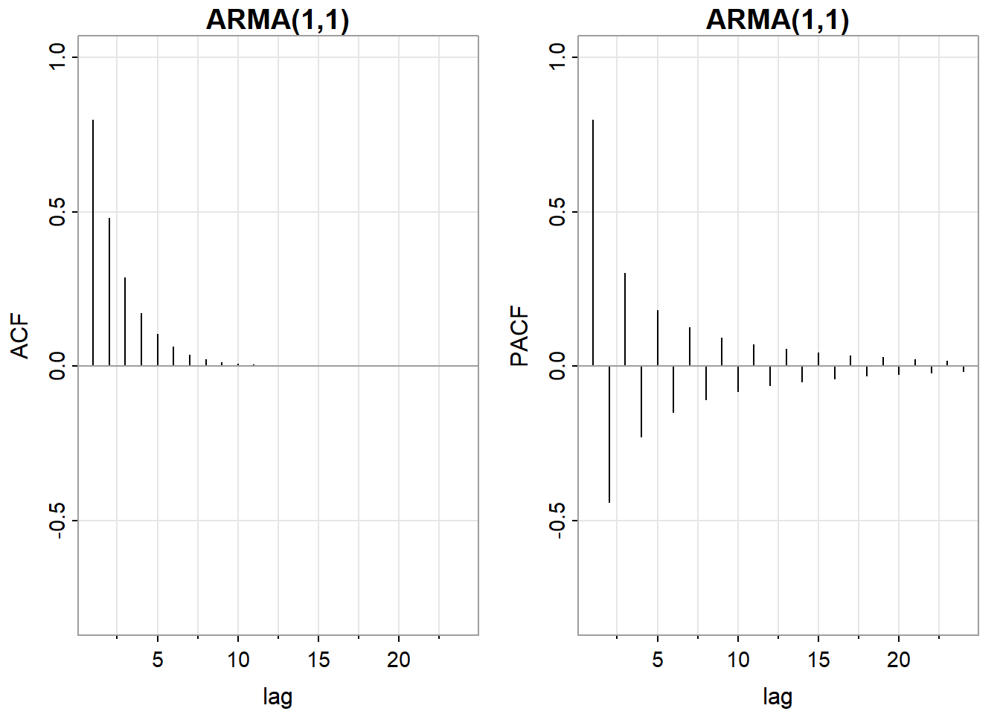
#ARMA(1,0)
ACF = ARMAacf(ar=0.6, ma=0, 24)[-1]
PACF = ARMAacf(ar=0.6, ma=0, 24, pacf=TRUE)
par(mfrow=1:2)
tsplot(ACF, type="h", xlab="lag", ylim=c(-.8,1))
abline(h=0, col=8)
title("ARMA(1,0)")
tsplot(PACF, type="h", xlab="lag", ylim=c(-.8,1))
abline(h=0, col=8)
title("ARMA(1,0)")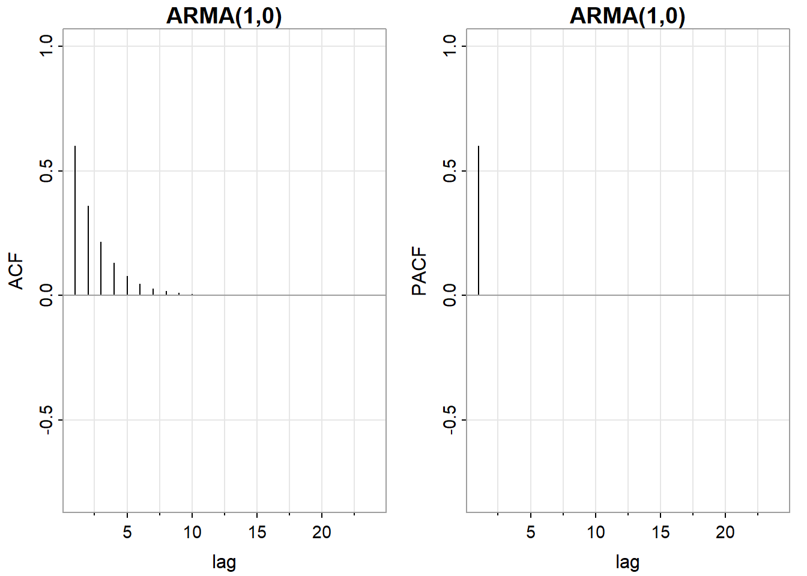
#ARMA(0,1)
ACF = ARMAacf(ar=0, ma=0.9, 24)[-1]
PACF = ARMAacf(ar=0, ma=0.9, 24, pacf=TRUE)
par(mfrow=1:2)
tsplot(ACF, type="h", xlab="lag", ylim=c(-.8,1))
abline(h=0, col=8)
title("ARMA(0,1)")
tsplot(PACF, type="h", xlab="lag", ylim=c(-.8,1))
abline(h=0, col=8)
title("ARMA(0,1)")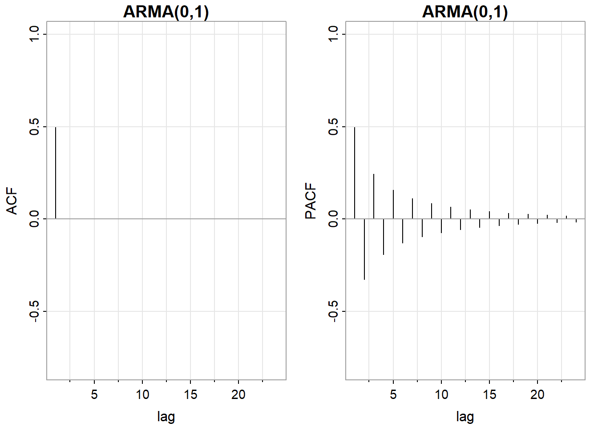
各类模型的ACF，PACF表现如下表所示：
| AR(p) | MA(q) | ARMA(p,q) | |
|---|---|---|---|
| ACF | 拖尾 | 在滞后q处截尾 | 拖尾 |
| PACF | 在滞后p处截尾 | 拖尾 | 拖尾 |
ACF可以确定MA(q)模型的阶数q，PACF可以确定AR(p)模型的阶数p。对于ARMA(p,q)模型，无法使用ACF，PACF来判断它的具体阶数。
4.4.2 (b)
取样本数为\(n=100\)，分别绘制三个模型的ACF，PACF：
- ARMA(1,1)
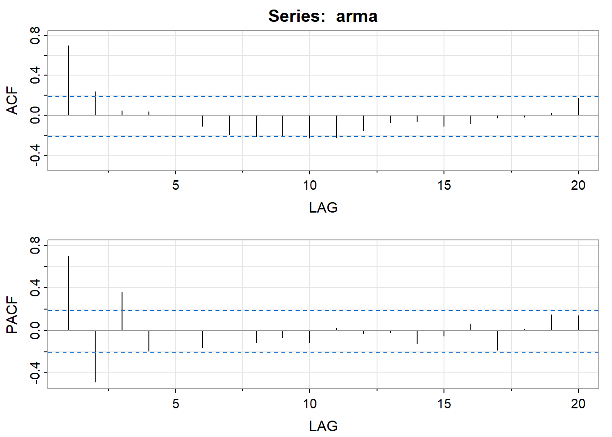
## [,1] [,2] [,3] [,4] [,5] [,6] [,7] [,8] [,9] [,10] [,11] [,12] [,13]
## ACF 0.7 0.24 0.05 0.04 0 -0.11 -0.19 -0.21 -0.21 -0.23 -0.22 -0.15 -0.07
## PACF 0.7 -0.49 0.36 -0.19 0 -0.16 0.00 -0.11 -0.07 -0.12 0.02 -0.03 -0.02
## [,14] [,15] [,16] [,17] [,18] [,19] [,20]
## ACF -0.06 -0.11 -0.08 -0.02 -0.02 0.03 0.18
## PACF -0.13 -0.05 0.06 -0.18 0.01 0.15 0.14- ARMA(1,0)
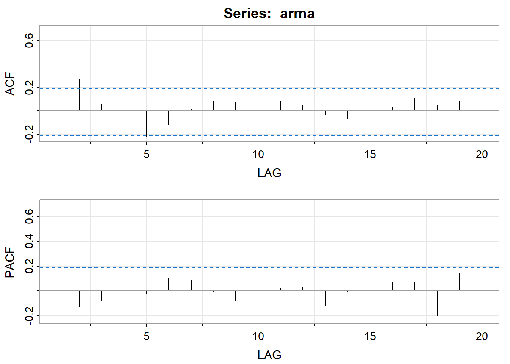
## [,1] [,2] [,3] [,4] [,5] [,6] [,7] [,8] [,9] [,10] [,11] [,12]
## ACF 0.6 0.27 0.05 -0.15 -0.22 -0.12 0.01 0.09 0.07 0.11 0.09 0.05
## PACF 0.6 -0.13 -0.08 -0.19 -0.02 0.11 0.09 -0.01 -0.08 0.10 0.02 0.03
## [,13] [,14] [,15] [,16] [,17] [,18] [,19] [,20]
## ACF -0.04 -0.07 -0.02 0.03 0.11 0.05 0.08 0.08
## PACF -0.12 0.00 0.10 0.07 0.07 -0.20 0.15 0.04- ARMA(0,1)
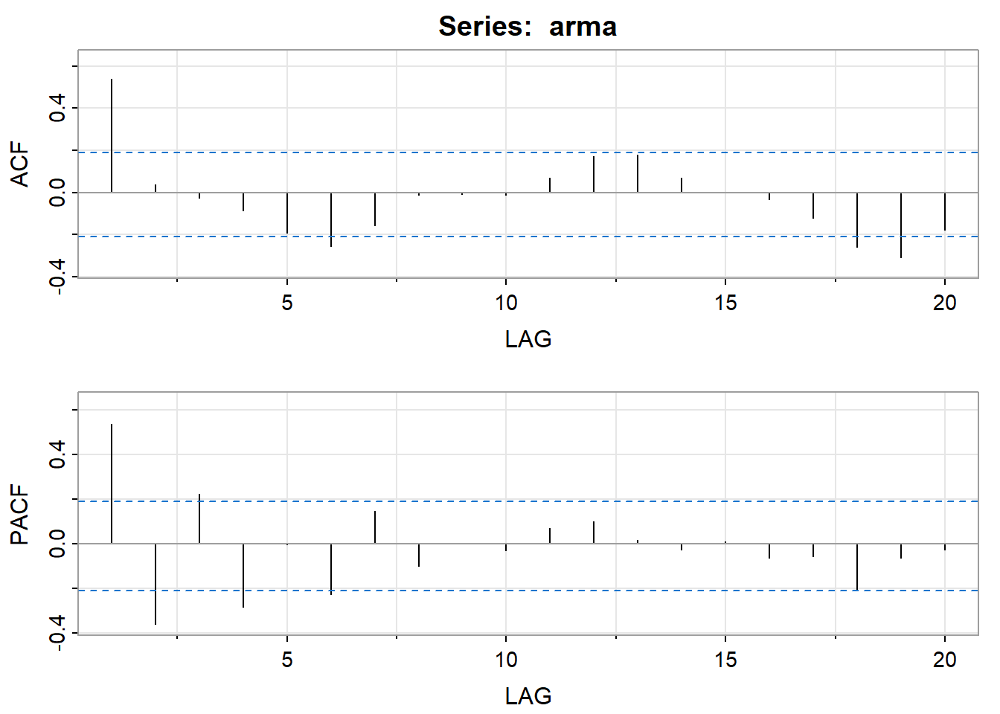
## [,1] [,2] [,3] [,4] [,5] [,6] [,7] [,8] [,9] [,10] [,11] [,12]
## ACF 0.54 0.04 -0.03 -0.09 -0.19 -0.26 -0.16 -0.01 -0.01 -0.01 0.07 0.17
## PACF 0.54 -0.36 0.22 -0.28 0.00 -0.22 0.15 -0.10 0.00 -0.03 0.07 0.10
## [,13] [,14] [,15] [,16] [,17] [,18] [,19] [,20]
## ACF 0.18 0.07 0.00 -0.03 -0.12 -0.26 -0.31 -0.18
## PACF 0.02 -0.02 0.01 -0.06 -0.06 -0.20 -0.06 -0.02观察发现，样本容量\(n=100\)时，ACF，PACF可能不太准确，与理论值存在比较大的误差。ARMA(1,0)模型的PACF本应该在LAG=1处截尾，ARMA(0,1)模型的ACF也应该在LAG=1处截尾。但是，实际上得到的结果并不支持这一结论。
4.4.3 (c)
重新选取样本容量\(n=500\)，分别绘制三个模型的ACF，PACF：
- ARMA(1,1)
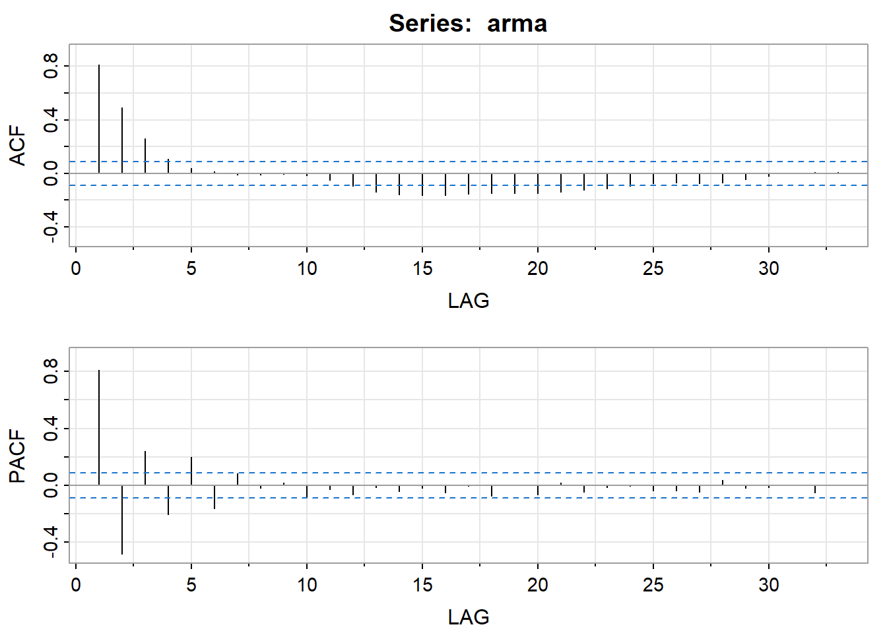
## [,1] [,2] [,3] [,4] [,5] [,6] [,7] [,8] [,9] [,10] [,11] [,12] [,13]
## ACF 0.81 0.49 0.26 0.11 0.04 0.01 -0.01 -0.01 0.00 -0.01 -0.05 -0.10 -0.14
## PACF 0.81 -0.48 0.24 -0.21 0.20 -0.16 0.08 -0.02 0.02 -0.08 -0.03 -0.07 -0.02
## [,14] [,15] [,16] [,17] [,18] [,19] [,20] [,21] [,22] [,23] [,24] [,25]
## ACF -0.16 -0.17 -0.16 -0.16 -0.15 -0.15 -0.15 -0.14 -0.13 -0.11 -0.1 -0.08
## PACF -0.04 -0.02 -0.05 -0.01 -0.07 0.00 -0.07 0.02 -0.05 -0.01 0.0 -0.04
## [,26] [,27] [,28] [,29] [,30] [,31] [,32] [,33]
## ACF -0.07 -0.08 -0.07 -0.05 -0.02 0 0.01 0.01
## PACF -0.04 -0.05 0.04 -0.02 -0.02 0 -0.05 0.00- ARMA(1,0)
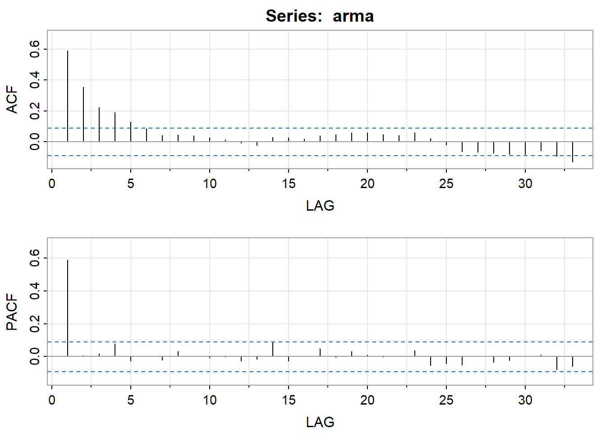
## [,1] [,2] [,3] [,4] [,5] [,6] [,7] [,8] [,9] [,10] [,11] [,12] [,13]
## ACF 0.59 0.35 0.22 0.19 0.13 0.09 0.04 0.04 0.04 0.03 0.01 -0.01 -0.02
## PACF 0.59 0.01 0.02 0.08 -0.03 0.00 -0.02 0.03 0.00 -0.01 0.00 -0.03 -0.02
## [,14] [,15] [,16] [,17] [,18] [,19] [,20] [,21] [,22] [,23] [,24] [,25]
## ACF 0.03 0.03 0.02 0.04 0.05 0.06 0.06 0.05 0.04 0.06 0.02 -0.02
## PACF 0.09 -0.03 0.00 0.05 0.00 0.03 0.01 0.00 0.00 0.04 -0.05 -0.04
## [,26] [,27] [,28] [,29] [,30] [,31] [,32] [,33]
## ACF -0.06 -0.07 -0.07 -0.08 -0.08 -0.06 -0.09 -0.13
## PACF -0.05 0.00 -0.04 -0.02 0.00 0.01 -0.08 -0.06- ARMA(0,1)
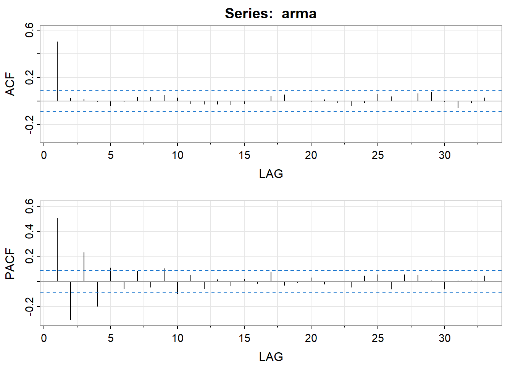
## [,1] [,2] [,3] [,4] [,5] [,6] [,7] [,8] [,9] [,10] [,11] [,12] [,13]
## ACF 0.5 0.03 0.02 -0.01 -0.04 -0.01 0.03 0.03 0.05 0.03 -0.02 -0.02 -0.03
## PACF 0.5 -0.31 0.23 -0.20 0.11 -0.06 0.08 -0.05 0.10 -0.10 0.05 -0.06 0.02
## [,14] [,15] [,16] [,17] [,18] [,19] [,20] [,21] [,22] [,23] [,24] [,25]
## ACF -0.03 -0.02 0.00 0.04 0.05 0.00 0.00 0.01 -0.01 -0.04 -0.01 0.06
## PACF -0.04 0.02 -0.01 0.08 -0.03 -0.01 0.03 -0.02 0.00 -0.04 0.05 0.05
## [,26] [,27] [,28] [,29] [,30] [,31] [,32] [,33]
## ACF 0.04 0.00 0.06 0.08 -0.01 -0.05 -0.02 0.03
## PACF -0.06 0.05 0.05 0.01 -0.06 0.01 0.01 0.05可以发现，增大样本容量使得PACF，ACF本应有的截尾性质更加显著。
4.5 4.5 cmort数据分析
4.5.3 (c)
## 回归参数估计以及相关统计量为：## Estimate SE t.value p.value
## ar1 -0.5064 0.0383 -13.2224 0由于p-value很小，因此可以AR(1)的回归参数估计是显著的。
## 白噪声方差的估计值为： 33.810574.5.5 (e)
对未来四个星期进行预测，并计算相应的95%的预测间隔：
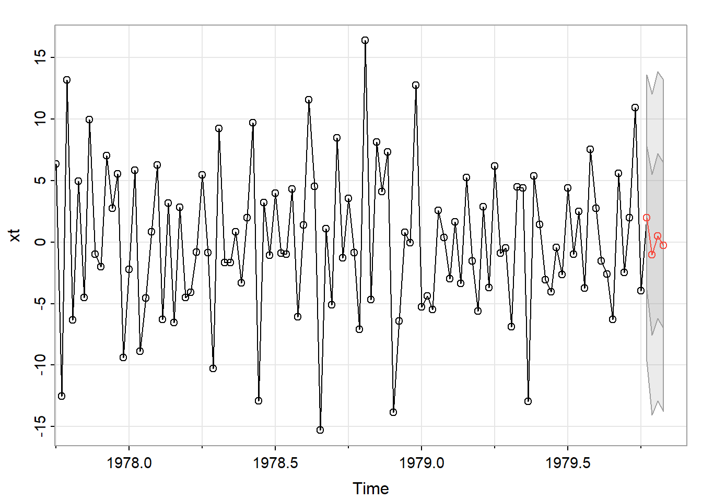
# 提取预测值
forecast_values <- sarima_result$pred
# 提取标准误差
se <- sarima_result$se
# 计算95%预测间隔的上限和下限
lower_bound <- forecast_values - 2 * se
upper_bound <- forecast_values + 2 * se
# 输出预测结果和预测间隔
week <- c("week 1","week 2","week 3","week 4")
result <- data.frame(week,预测值 = forecast_values,
下限 = lower_bound, 上限 = upper_bound)
result## week 预测值 下限 上限
## 1 week 1 1.9555424 -9.673559 13.58464
## 2 week 2 -1.0298842 -14.065001 12.00523
## 3 week 3 0.4818973 -12.889967 13.85376
## 4 week 4 -0.2836494 -13.740508 13.173214.5.6 (f)
首先，预测值是通过运行SARIMA模型的预测函数（例如sarima.for()）得到的。这个函数基于已有的时间序列数据和模型参数，根据模型的推断方法来生成未来时间点的预测值。在例子中，sarima.for()函数返回了一个包含四个预测值的时间序列对象，分别对应未来四个时间点的预测。
然后，标准误差是指模型在预测过程中产生的误差的标准差。它用来度量模型预测的不确定性。在例子中，sarima.for()函数还返回了一个包含四个标准误差值的时间序列对象，分别对应于每个预测值的标准误差。
接下来，根据预测值和标准误差，可以计算出预测区间。预测区间是用来表示预测值的不确定性范围，通常以置信水平的形式给出（如95%置信区间）。在这种情况下，我们可以使用预测值加减两倍标准误差来计算95%的预测区间。下限等于预测值减去两倍的标准误差，上限等于预测值加上两倍的标准误差。
因此，根据结果，预测区间可以通过预测值加减两倍标准误差来计算得到。这个预测区间可以帮助评估预测值的可靠性，并提供对未来观测值可能的范围的一定程度的估计。
4.6 4.6 模型预测与MSPE
m步预测为 \[ x_{n+m}^{n}=\phi^{m}x_{n} \] 根据课本上的结果及几何级数的和，MSPE为： \[\begin{align} E[(x_{n+m}-x_{n+m}^{n})^{2}]&=\sigma_{w}^{2}(1+\phi^2+···+\phi……{2(m-1)})\notag\\ &=\sigma_{w}^{2}\frac{1-\phi^{2m}}{1-\phi^2}\notag \end{align}\]
4.7 4.7 参数估计
# 重复进行五次实验
num_experiments <- 5
output <- "" # 初始化输出字符串
for (i in 1:num_experiments) {
# 生成100个iid N(0,1)观测值并拟合ARMA(1,1)模型
data <- rnorm(100)
model <- sarima(data, 1, 0, 1)
# 输出参数估计结果
output <- paste(output, "在实验", i, "中，拟合的ARMA(1,1)模型的参数估计结果为：\n")
output <- paste(output, "AR 参数估计值:", model$fit$coef[1],"\n")
output <- paste(output, "MA 参数估计值:", model$fit$coef[2],"\n")
output <- paste(output, "\n")
}## 在实验 1 中，拟合的ARMA(1,1)模型的参数估计结果为：
## AR 参数估计值: -0.471503493155923
## MA 参数估计值: 0.6102172613011
##
## 在实验 2 中，拟合的ARMA(1,1)模型的参数估计结果为：
## AR 参数估计值: -0.662910634161264
## MA 参数估计值: 0.583349220329755
##
## 在实验 3 中，拟合的ARMA(1,1)模型的参数估计结果为：
## AR 参数估计值: 0.532586608641356
## MA 参数估计值: -0.414304525082842
##
## 在实验 4 中，拟合的ARMA(1,1)模型的参数估计结果为：
## AR 参数估计值: 0.558430221940262
## MA 参数估计值: -0.703347009129763
##
## 在实验 5 中，拟合的ARMA(1,1)模型的参数估计结果为：
## AR 参数估计值: -0.652726392342175
## MA 参数估计值: 0.922044360823668
## 4.8 4.8 参数的MLE
生成参数\(\phi=0.9, \theta=0.5, \sigma^{2}=1\)的ARMA(1,1)过程的\(n=200\)个观测值，重复十次，并且每次都求出三个参数的MLE：
set.seed(2023)#使得结果可重现
c()->phi->theta->sigma2
for (i in 1:10) {
x = arima.sim(n=200,list(ar=.9,ma=.5))
fit = arima(x, order = c(1,0,1))
phi[i]=fit$coef[1]; theta[i]=fit$coef[2]; sigma2=fit$sigma2
}
A=cbind("phi"=phi,"theta"=theta,"sigma2"=sigma2)
A## phi theta sigma2
## [1,] 0.9472737 0.4324380 1.026246
## [2,] 0.8677612 0.4774988 1.026246
## [3,] 0.8824127 0.5129200 1.026246
## [4,] 0.9237088 0.4689059 1.026246
## [5,] 0.9408428 0.3550534 1.026246
## [6,] 0.8050361 0.5683730 1.026246
## [7,] 0.9317511 0.4796632 1.026246
## [8,] 0.9029819 0.4977130 1.026246
## [9,] 0.9061346 0.5107797 1.026246
## [10,] 0.9203406 0.5325410 1.026246可以使用误差值和真实值之间的误差图来对比真实值和误差值：
# 真实值
true_phi <- 0.9
true_theta <- 0.5
true_sigma2 <- 1
# 估计值
estimated_phi <- A[,1]
estimated_theta <- A[,2]
estimated_sigma2 <- A[,3]
# 计算误差
error_phi <- estimated_phi - true_phi
error_theta <- estimated_theta - true_theta
error_sigma2 <- estimated_sigma2 - true_sigma2
# 创建数据框
error_data <- data.frame(index = 1:10, phi = error_phi,
theta = error_theta, sigma2 = error_sigma2)
# 绘制误差图
ggplot(data = error_data) +
geom_line(aes(x = index, y = phi, color = "phi"), size = 1) +
geom_line(aes(x = index, y = theta, color = "theta"), size = 1) +
geom_line(aes(x = index, y = sigma2, color = "sigma2"), size = 1) +
labs(x = "Index", y = "Error", title = "Error Plot") +
geom_point(aes(x = index, y = phi, color = "phi"), size = 3) +
geom_point(aes(x = index, y = theta, color = "theta"), size = 3) +
geom_point(aes(x = index, y = sigma2, color = "sigma2"), size = 3) +
labs(x = "Index", y = "Error", title = "Error Plot") +
scale_color_manual(values = c("phi" = "#1f77b4", "theta" = "#ff7f0e",
"sigma2" = "#2ca02c"),name = "") +
theme_minimal() +
theme(legend.position = "top")## Warning: Using `size` aesthetic for lines was deprecated in ggplot2 3.4.0.
## ℹ Please use `linewidth` instead.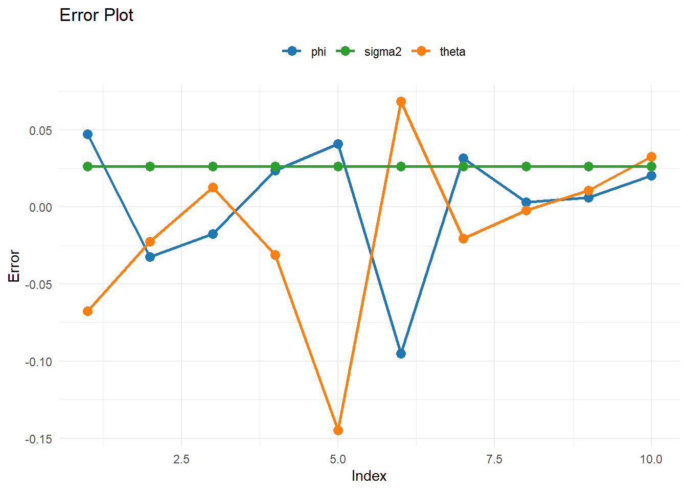 可以发现\(\sigma^2\)的误差恒定，\(\theta\)的误差振幅较大。
4.9 4.9 AR(1)的高斯-牛顿算法
AR(1)过程\(x_{t}=\phi x_{t-1}+w_{t}\)其误差为： \[ w_{t}(\phi)=x_{t}-\phi x_{t-1} \]
其中，\(x_{t}\)是时间序列的当前观测值，\(x_{t-1}\)是前一时刻的观测值，\(w_{t}\)是误差项，\(\phi\)是我们要估计的自回归参数。
高斯-牛顿算法的基本思想是通过迭代寻找使得目标函数达到最小化的参数值。在AR(1)模型中，我们可以将参数估计问题转化为最小化目标函数的问题。
对于AR(1)模型，可以构建似然函数或平方和损失函数作为目标函数。然后，我们使用高斯-牛顿算法的迭代步骤来更新参数值，直到达到收敛条件。在本例中选取 \[ S_{c}(\phi)=\sum_{t=1}^{n}w_{t}^{2}(\phi) \]
设\(\phi_{0}\)是\(\phi\)的一个初始估计。\(S_{c}(\phi)\)在\(\phi_{0}\)的一阶泰勒展式为： \[ S_{c}(\phi)=\sum_{t=1}^{n}w_{t}^{2}(\phi)\approx \sum_{t=1}^{n}[w_{t}(\phi_{0})-(\phi-\phi_{0})z_{t}(\phi_{0})]^{2} \]
其中， \[ z_{t}(\phi_{0})=-\frac{\partial w_{\phi}}{\partial \phi}\mid_{\phi=\phi_{0}} \]
经运算可得 \[ z_{t}(\phi_{0})= x_{t-1} \]
因为算法使用给定的数据\(x_{1},···,x_{n}\)，而不考虑任何条件信息。因此高斯-牛顿算法过程产生的估计可以被视为无条件估计。
总结起来，高斯-牛顿算法可以用于估计AR(1)模型中的自回归参数。该算法过程产生的估计是无条件估计，因为它不考虑任何条件信息。
4.10 4.10 预测误差
构造\(\Delta\)如下： \[\begin{align} \Delta&=\sum_{j=0}^{\infty}\phi_{j}w_{m+n-j}^{n}-\sum_{j=m}^{\infty}\phi_{j}w_{m+n-j}\notag\\ &=\sum_{j=0}^{m-1}\phi_{j}w_{m+n-j}^{n} + \sum_{j=m}^{\infty}\phi_{j}(w_{m+n-j}^{n}-w_{m+n-j})\notag \end{align}\]
由于时间序列\(x_{t}\)可以写成因果和的形式，那么常数\(\phi_{j}\)存在如下约束： \[ \sum_{j=0}^{\infty}\phi^{2}<\infty \] 这表明\(n\to\infty\)时，\(\phi_{j}\to 0\)。因此有 \[ \sum_{j=0}^{m-1}\phi_{j}w_{m+n-j}^{n} \to 0 , n\to\infty \] 当\(j\ge m\)时，\(w_{n+m-j}^{n}\)实际上是确定已知的历史数据\(w_{n+m-j}\)，因此 \[ \sum_{j=m}^{\infty}\phi_{j}(w_{m+n-j}^{n}-w_{m+n-j})=0 \] 综上可知，当\(n\to0\)时，\(\Delta\to0\)。这表明，当n充分大的时候，有如下结果： \[ x_{n+m}^{n}=\sum_{j=0}^{\infty}\phi_{j}w_{m+n-j}^{n}=\sum_{j=m}^{\infty}\phi_{j}w_{m+n-j} \]
利用上面的结果可以证明如下结论： \[\begin{align} E[x_{n+m}-x_{n+m}^{n}]^{2}&=E[\sum_{j=0}^{\infty}\phi_{j}w_{m+n-j}-\sum_{j=m}^{\infty}\phi_{j}w_{m+n-j}]\notag\\ &=E[\sum_{j=0}^{m-1}\phi_{j}w_{n+m-j}]^{2}\notag\\ &=\sum_{j=0}^{m-1}\phi_{j}^{2}E[w_{n+m-j}^{2}]\notag\\ &=\sigma^{2}_{w}\sum_{j=0}^{m-1}\phi_{j}^{2}\notag \end{align}\] \(\square\)